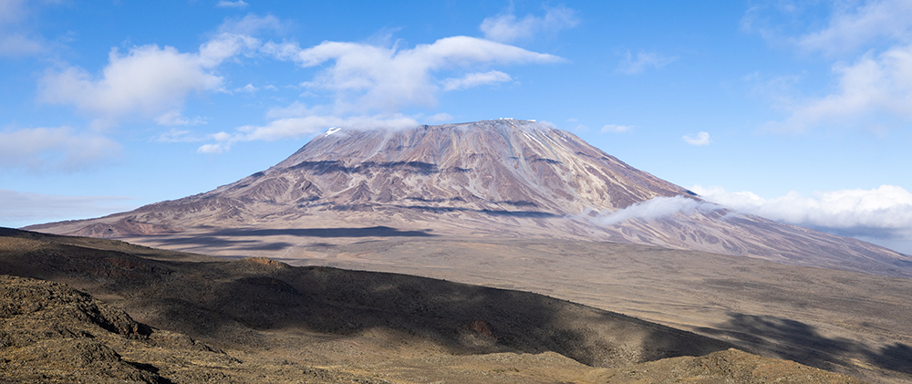
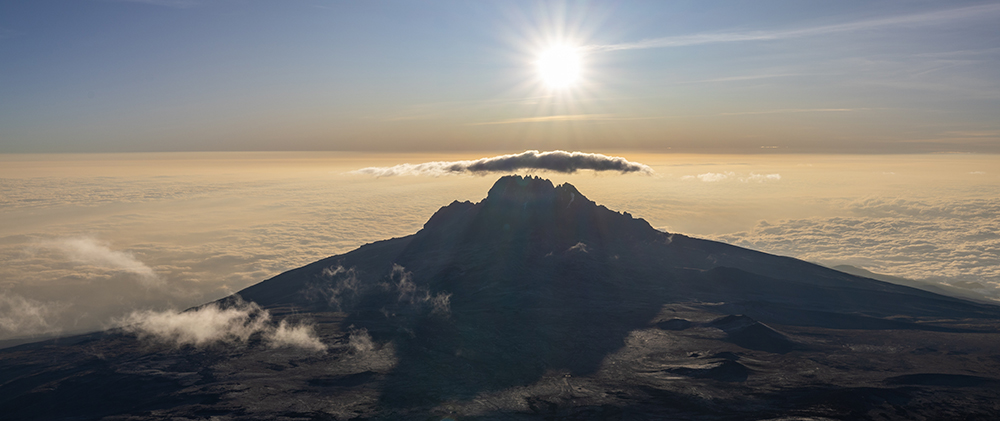
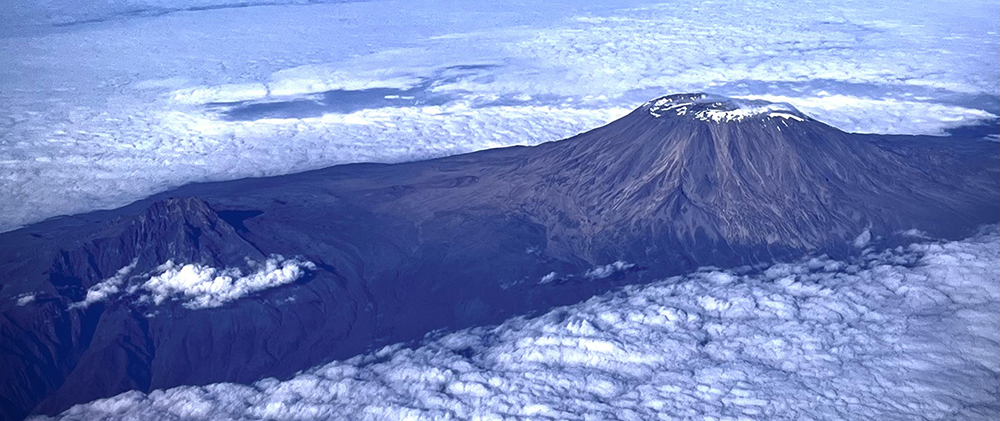
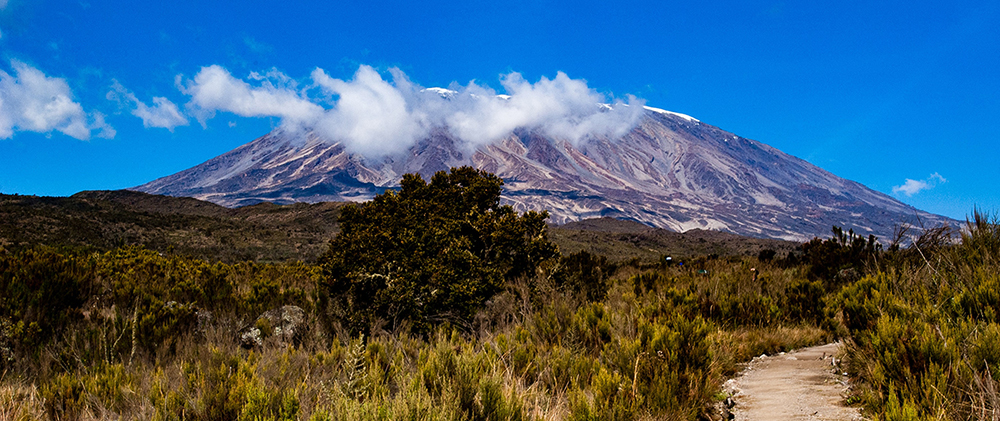

Kilimandżaro
Do najbardziej monumentalnych samotnych gór świata należy najwyższy szczyt Afryki – Kilimandżaro. Od zarania dziejów ten wysoko dominujący nad otoczeniem stożek wulkaniczny, budził szacunek i respekt wśród zamieszkujących te okolice plemion. Dziś wciąż jest podziwiany, stanowi atrakcję turystyczną Tanzanii i wielu podróżników decyduje się na wyprawę na Kibo – Kilimandżaro. Kilimandżaro znajduje się w Tanzanii, niedaleko granicy z Kenią.
To najwyższa góra w Afryce, a także jedyne miejsce na tym kontynencie, gdzie mamy do czynienia z całorocznym śniegiem. To też jeden z najwyższych samotnych masywów na całym świecie. W skład Kilimandżaro wchodzą trzy szczyty, które są pozostałościami po trzech wulkanach. Szczyt Uhuru znajduje się na wulkanie Kibo i osiąga wysokość 5895 m n.p.m., szczyt Mawenzi ma wysokość 5150 m n.p.m., natomiast szczyt Shira osiąga 3940 m n.p.m. Spośród nich Uhuru wznosi się około 4900 m ponad terenami, które otaczają ten masyw.


Kilimandżaro jest stratowulkanem, lecz jego wulkaniczne wnętrze jest stosunkowo słabo poznane, ponieważ nie doszło do żadnej znaczącej erozji, która odsłoniłaby warstwy magmowe. Aktywność erupcyjna Shira rozpoczęła się około 2,5 miliona lat temu, a ostatnia ważna faza miała miejsce około 1,9 miliona lat temu. Z kolei Mawenzi i Kibo zaczęły wybuchać około 1 miliona lat temu. Są one oddzielone płaskowyżem siodłowym na wysokości około 4400 m n.p.m. Kibo jest zwieńczone prawie symetrycznym stożkiem ze skarpami wznoszącymi się na około 180 – 200 m po południowej stronie. Skarpy te wyznaczają kalderę o szerokości 2,5 km. Wewnątrz tej kaldery znajduje się Stożek Wewnętrzny, a w kraterze Stożka Wewnętrznego znajduje się krater Reusch.
Około 100 tys. lat temu część krawędzi krateru Kibo zawaliła się, tworząc obszar znany jako Zachodni Wyłom. Według jednej z hipotez, którą to wysnuł niemiecki misjonarz Johann Ludwig Krapf, nazwa „Kilimandżaro” pochodzi z od dwóch słów w języku tutejszych plemion. „Kilima” ma oznaczać „Góra”, natomiast „Njiaro” to „Karawana”. Warto wspomnieć, iż zanim przybyli tu Europejczycy, okolice tych masywów wulkanicznych zamieszkiwały liczne plemiona koczownicze. Ogromne Kilimandżaro pośród nizin – to stanowiło dla lokalnych ludów coś niezwykłego – wzbudzało u nich grozę nawet do takiego stopnia, że nazwali oni ten masyw „Górą złych duchów”. Niektóre plemiona, a wśród nich Masajowie, oddawali nawet boską cześć „Górze światłości”.

